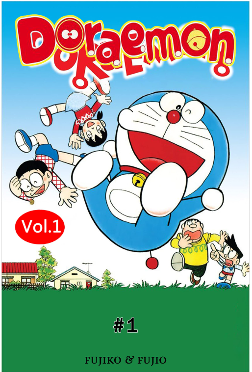

Doraemon – bộ manga nổi tiếng của Fujiko F. Fujio kể về chú mèo máy đến từ thế kỷ 22 cùng những bảo bối thần kỳ giúp cậu bé Nobita vượt qua khó khăn trong học tập và cuộc sống.
Với những câu chuyện hài hước giàu trí tưởng tượng, Doraemon đã trở thành người bạn thân thiết của nhiều thế hệ thiếu nhi mang đến niềm vui và bài học về tình bạn, lòng dũng cảm và sự sáng tạo.
Đây là tác phẩm manga thiếu nhi kinh điển không chỉ giải trí mà còn nuôi dưỡng trí tưởng tượng và ước mơ cho độc giả nhỏ tuổi. Doraemon xứng đáng là bộ truyện gắn bó cùng tuổi thơ của hàng triệu người.